.
SAMODZIELNA BUDOWA KAMERKI CHŁODZONEJ
|
Posiadając niechłodzoną wersję kamerki ZWO ASI 224 MC postanowiłem na jej bazie zbudować urządzenie chłodzone. Jest to bardziej budowa nowej kamerki na "bebechach" fabrycznej niż modyfikacja fabrycznego urządzenia sama w sobie. W sieci prezentowanych jest wiele modyfikacji polegających na oklejeniu oryginalnej puszki pianką i chłodzeniu całości obudowy Ogniwem Peltiera, niestety, takie podejście uniemożliwia uporanie się z rosą wytrącającą się na okienku matrycy kamerki. Są to przeze mnie tzw. "modyfikacje biurkowe", dają one spektakularne wykresy wartości chłodzenia, ale nigdy nie przechodzą z etapu blatu biurka do etapu codzienności użytkowej. Postanowiłem więc zbudować kamerkę zupełnie od nowa z wykorzystaniem najnowszych trendów zależności elektronika-obudowa-gospodarka termiczna. Zdjęcia ukazujące rozbiórkę oryginalnej kamerki oraz uprzednią nietypową konwersję do ( mod-Mark I ) można zobaczyć TUTAJ OPIS BUDOWY Co ciekawe, za punkt wyjściowy nowoczesnej maksymalnie zoptymalizowanej kamerki astrofotograficznej, służy... rdzeń radiatora :) To na nim obrasta cała reszta urządzenia, do niego przytwierdzona jest płytka matrycy i ogniwo peltiera, oraz pierścień mocujący nosek kamerki, który jednocześnie odbierając część ciepła radiatorowi, przekazuje je do okienka matrycy, zapobiegając tym jego roszeniu, nadto, do żeber radiatora zamontowana jest płytka główna elektroniki i w ten bardzo prosty, acz skuteczny sposób, domyka nam się całość jako zwarte i proste urządzenie. - Radiator, stanowiący element główny/nośny kamerki, pochodzi ze starego PC-ta, z chłodzenia procesora. Tak się fajnie złożyło, że był w komplecie ze spinanym na wymiar wentylatorkiem. - Nosek kamerki wykonałem z metalowej hydraulicznej tzw. zwężki stalowej, odpowiednio przyciętej flexem i spłaszczonej po rozgrzaniu palnikiem z góry i dołu. Gwint na oryginalny front noska, bo postanowiłem go wykorzystać, wykonałem z żywicy (ciekły metal) patrz OPIS. - Oryginalna tasiemka, łącząca płytkę matrycy oraz płytkę główną elektroniki, dla moich potrzeb okazała się być za krótka, a że zakupienie takiej o potrzebnych parametrach okazało się niemożliwe, zakupiłem więc dłuższą (150 mm) i przyciąłem na wymagany wymiar. Przyciąć taką tasiemkę to czynność prosta, jednak zaprawić na nowo końcówkę, to już zupełnie inna bajka. Aby usunąć biały lakier ochronny, nie uszkadzając ścieżek, użyłem zestawu pilniczków i polerek do paznokci, miękkich i sztywnych, o różnej ziarnistości. Podstawą zabiegu jest się nie spieszyć, i pracować na tasiemce bardzo ostrożnie, gdyż, jak to mawiał zawsze Heniu Kowalewski "Pośpiech jest wskazany jedynie przy łapaniu pcheł" :] - Ogniwo Peltiera, to eksperymentalnie, kaskadowy czteromodułowy TEC4-24603. - Zasilaniem kamerki zajmuje się zmodyfikowany zasilacz komputerowy, tzw. ATX. Poniżej kamerka na różnych etapach budowy. HAMAL|ASI224MC|Mk2 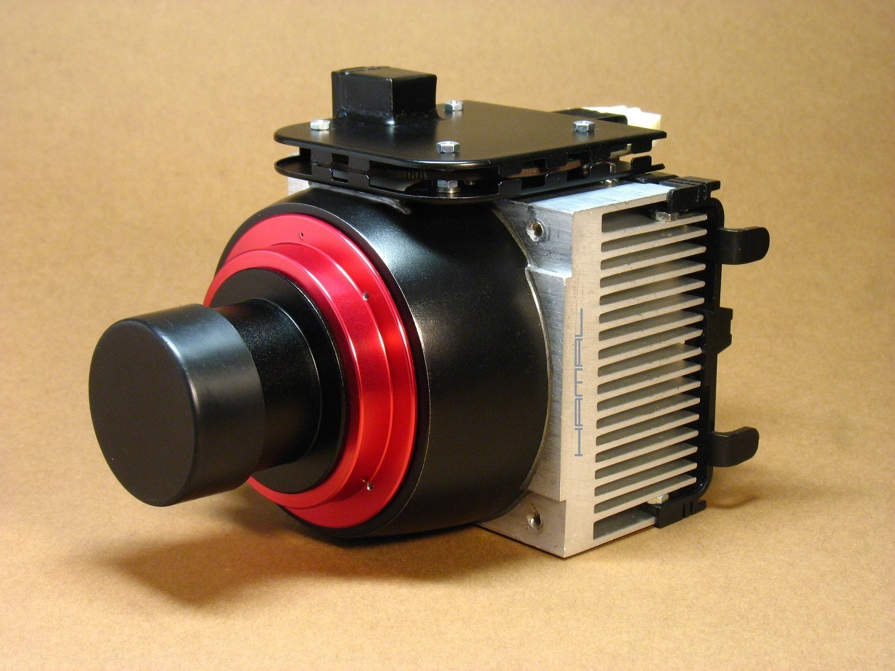 HAMAL|ASI224MC|Mk2 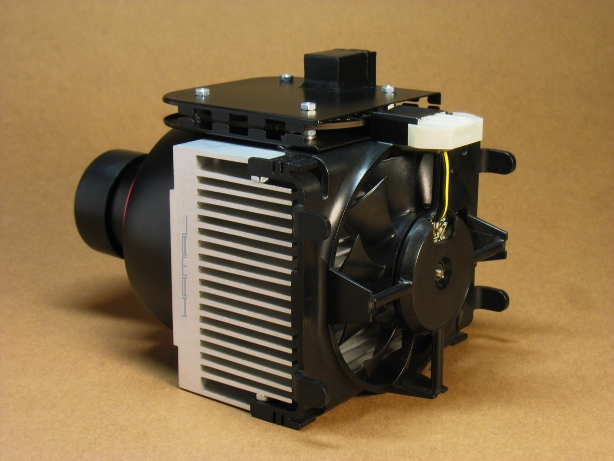 HAMAL|ASI224MC|Mk2  HAMAL|ASI224MC|Mk2 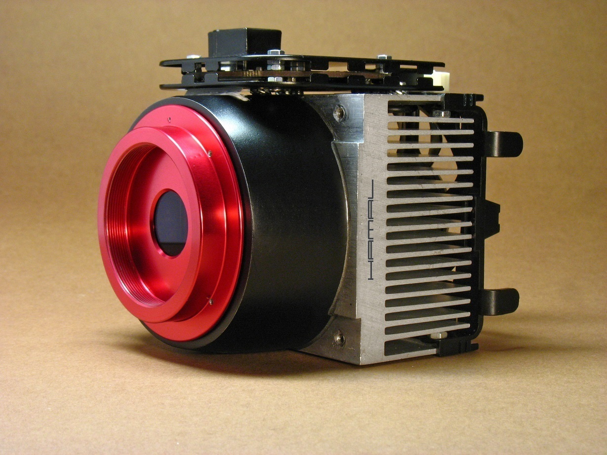 HAMAL|ASI224MC|Mk2 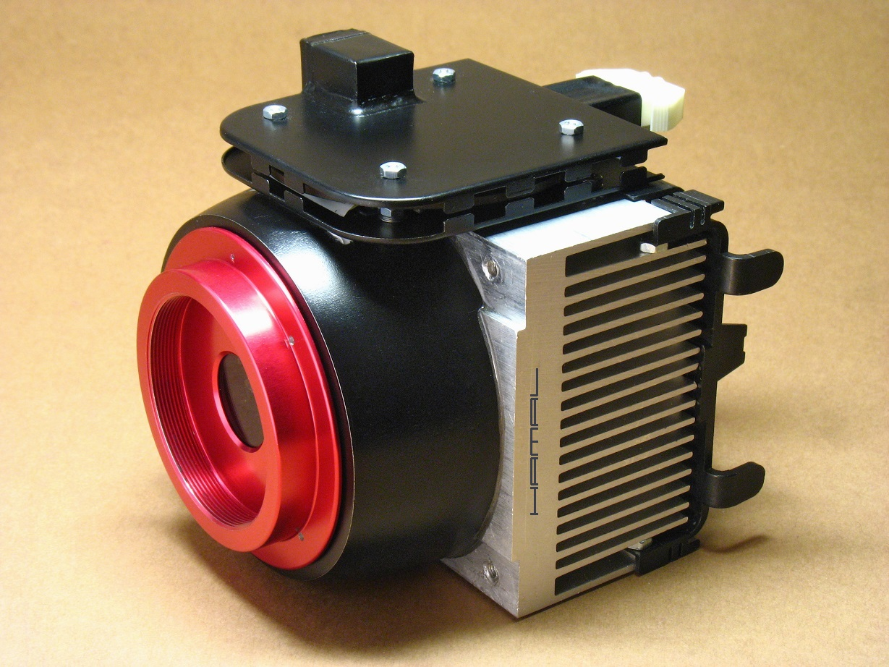 HAMAL|ASI224MC|Mk2 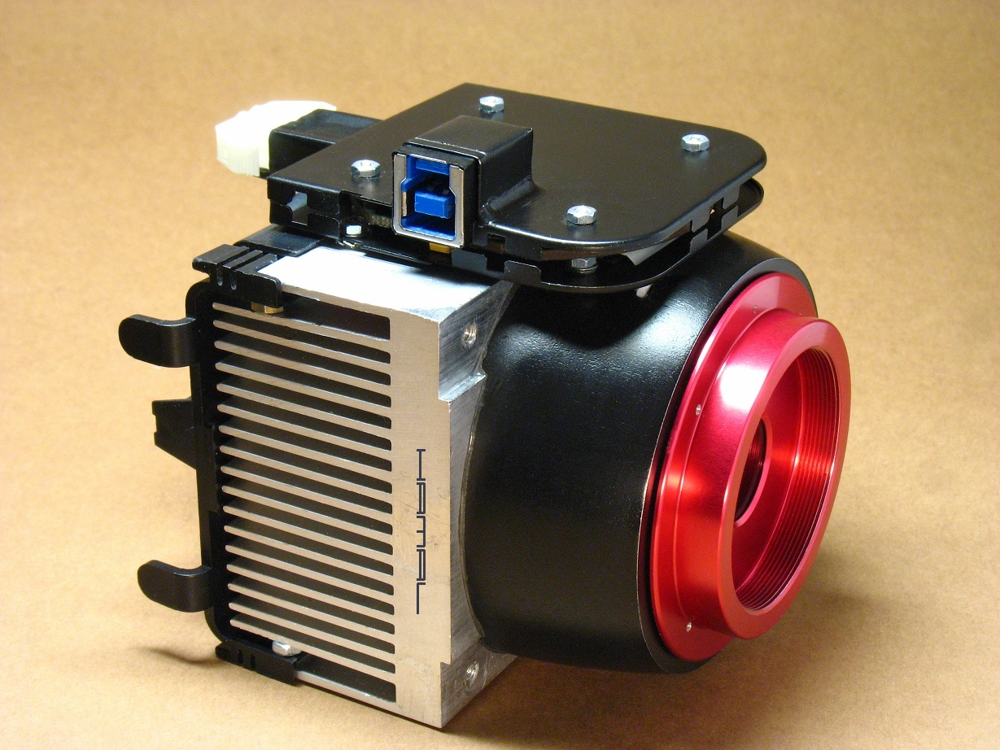 HAMAL|ASI224MC|Mk2 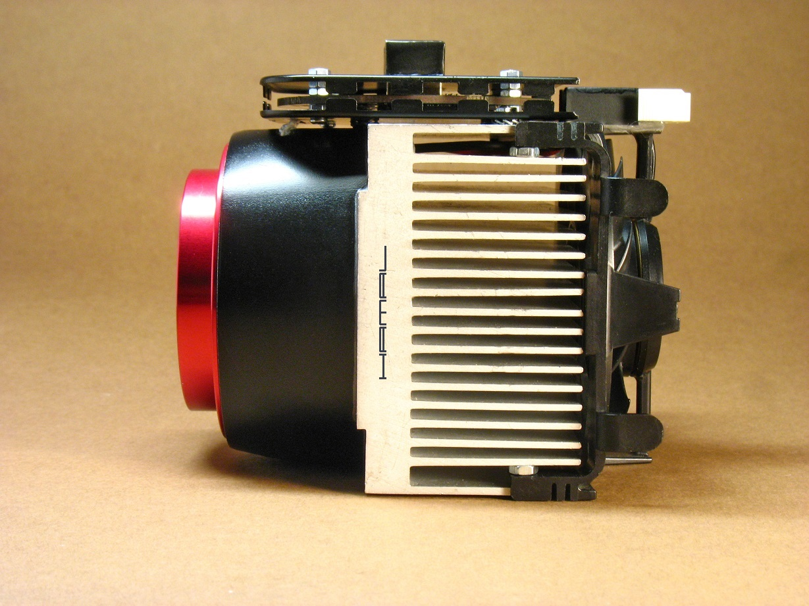 HAMAL|ASI224MC|Mk2 - TEC4-24603 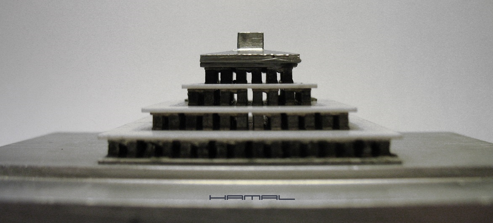 HAMAL|ASI224MC|Mk2 - TEC4-24603 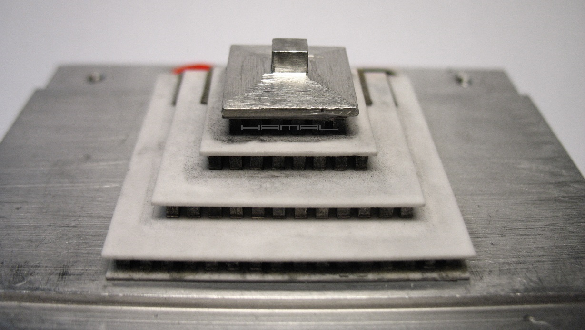 HAMAL|ASI224MC|Mk2  HAMAL|ASI224MC|Mk2 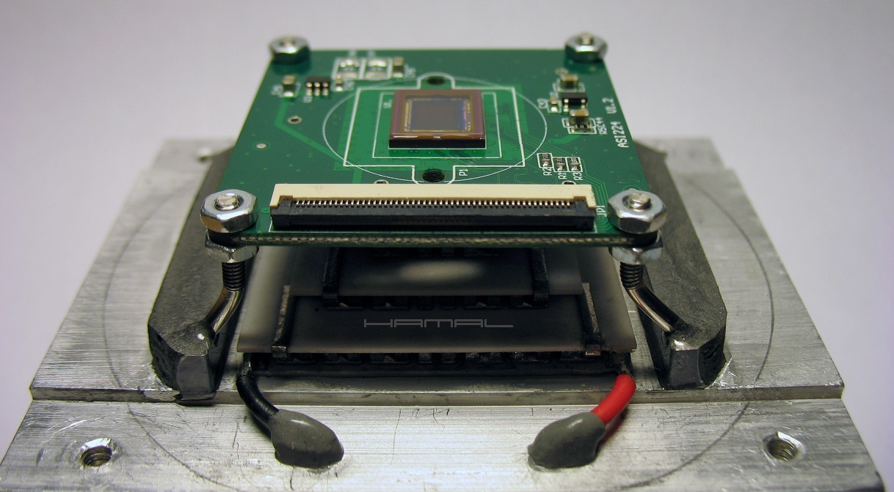 HAMAL|ASI224MC|Mk2 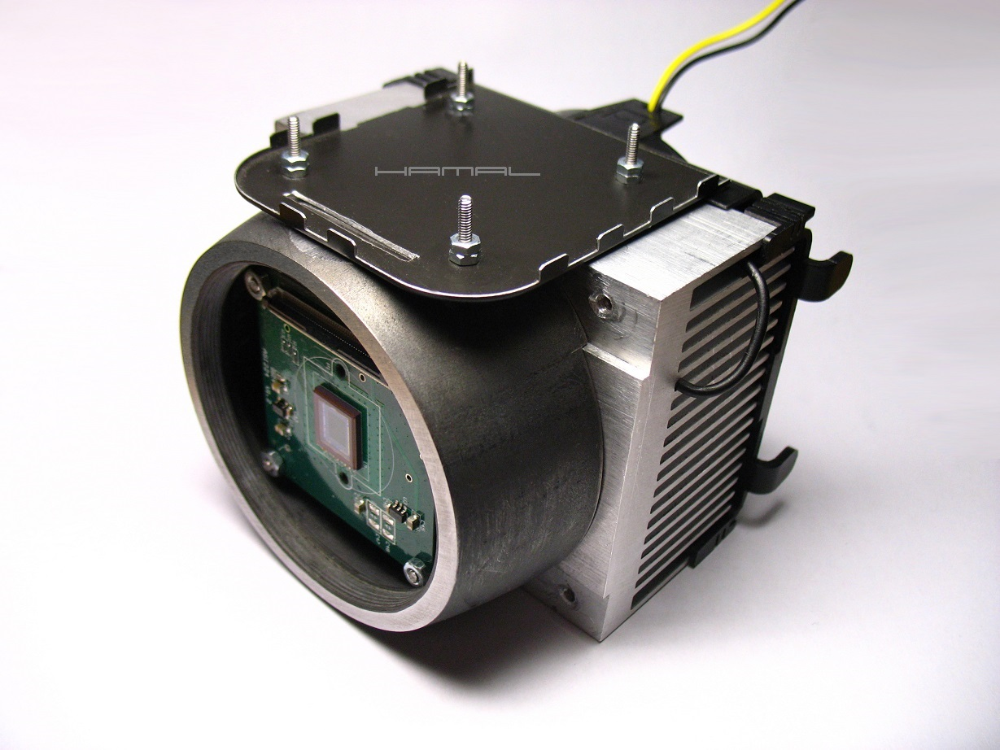 HAMAL|ASI224MC|Mk2 - Porównanie tasiemki łączącej obie płytki. Oryginalna na prawo i dorobiona, skrócona z dłuższej, na lewo. 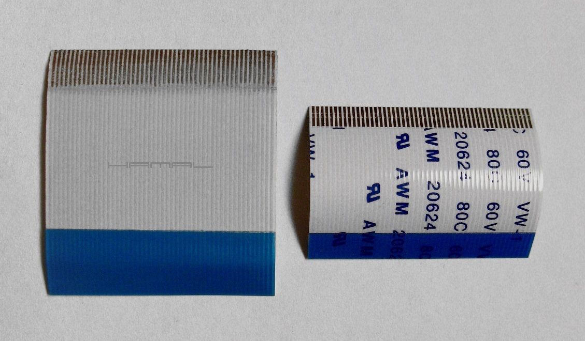 HAMAL|ASI224MC|Mk2 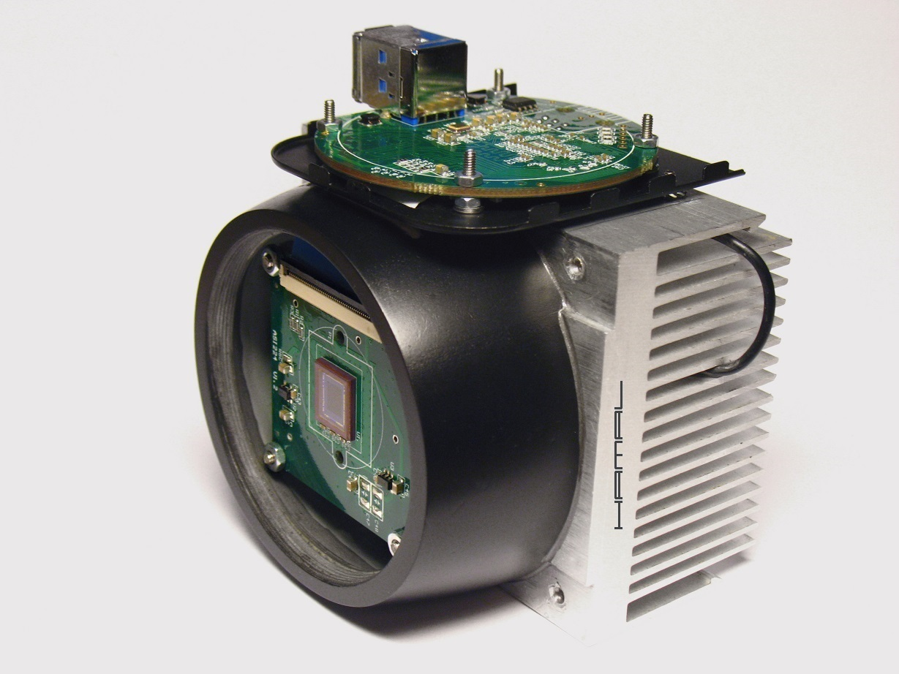 HAMAL|ASI224MC|Mk2 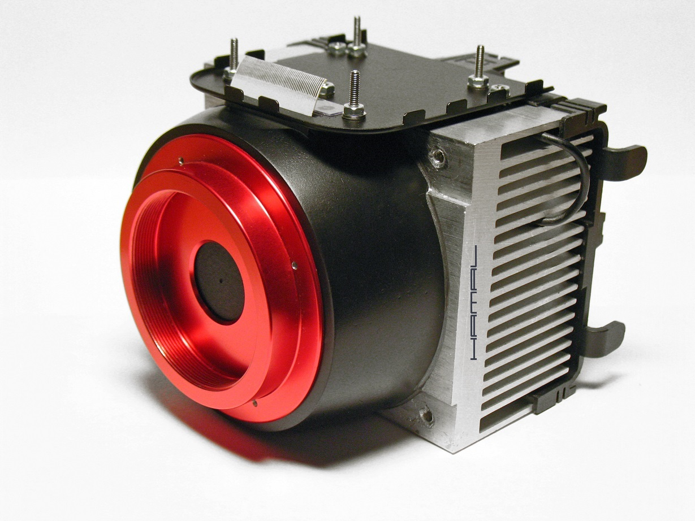 HAMAL|ASI224MC|Mk2 - Poniżej wynik centrowania noska kamerki względem środka matrycy, powyżej przysłona, która wygenerowała nam plamkę światła. 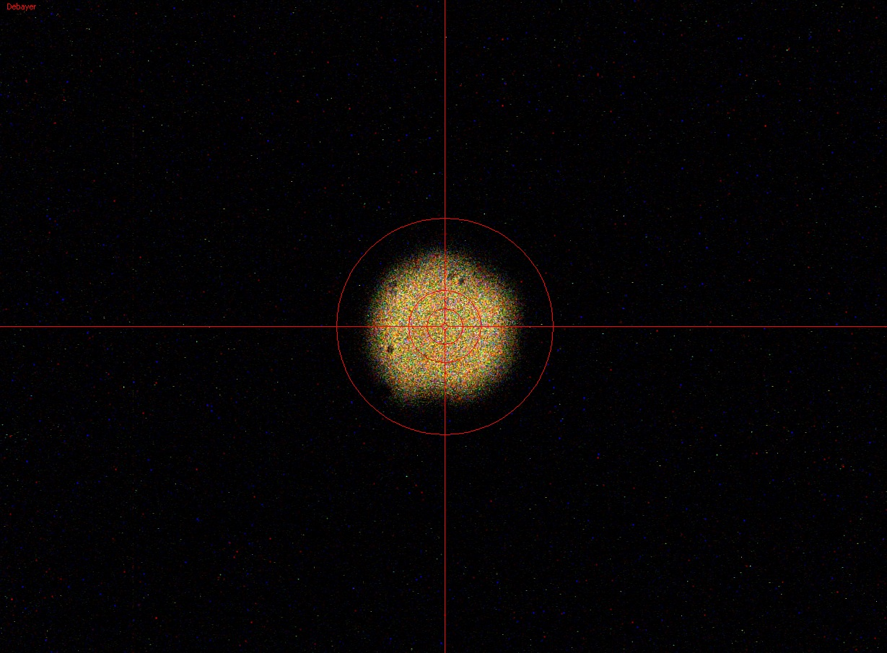 PODSUMOWANIE . Kamerka w testach osiąga wartość delta na poziomie 30℃, jest to średni wynik, jak na dzisiejsze standardy, jednak... jak się okazało w świetle nowych ustaleń, w przerobionych przeze mnie kamerkach, spadki temperatury matrycy są znacznie wyższe, niż wynika to z wyświetlanych w programach akwizycyjnych wartości, a to dlatego, iż w tego typu kamerkach pomiaru temperatury matrycy nie dokonuje się w samej matrycy, lecz na płytce elektroniki, z dala od samej matrycy!!! Więc w moim przypadku, gdy matryca jest precyzyjnie chłodzona z pominięciem reszty płytki, wyniki spadku temperatury są mocno zaniżane. Fabryczne modele kamerek z tego właśnie względu posiadają chłodzoną całą płytkę, wraz z czujnikiem temperatury, co dla odmiany sprawia, że wyniki pomiarów spadku temperatury sensora są zawyżane !! WIĘCEJ Odbiór ciepła z Ogniwa Peltiera w kamerze jest na tyle wydajny, że radiator i obudowa przy maksymalnej mocy (nawet w mieszkaniu +23℃) są jedynie letnie. Temperaturę matrycy można precyzyjnie regulować w zakresie delta 0-30 za pomocą potencjometru na bazie układu LM317. Wyskalowany doświadczalnie w wartości delta potencjometr pozwala nam szybko nastawić zadaną temperaturę. Niestety, zmiany temperatury otoczenia będącego punktem odniesienia musimy w czasie sesji już korygować ręcznie, co nie zmienia faktu, że podczas prób, zadane np. -20℃ potrafi trzymać z dokładnością 0,5℃ bez ingerencji przez prawie godzinę, więc jak widać, możliwość takiej funkcji nie jest zupełnie obojętna, a jej przydatność, w odniesieniu mrożenia na full bez możliwości jakiegokolwiek wpływu na temperaturę matrycy, jest niepodważalna. Bardziej szczegółowe rozważania na temat samych Modułów-Ogniw Peltiera TUTAJ.
MOGĄ CIĘ ZAINTERESOWAĆ RÓWNIEŻ


|